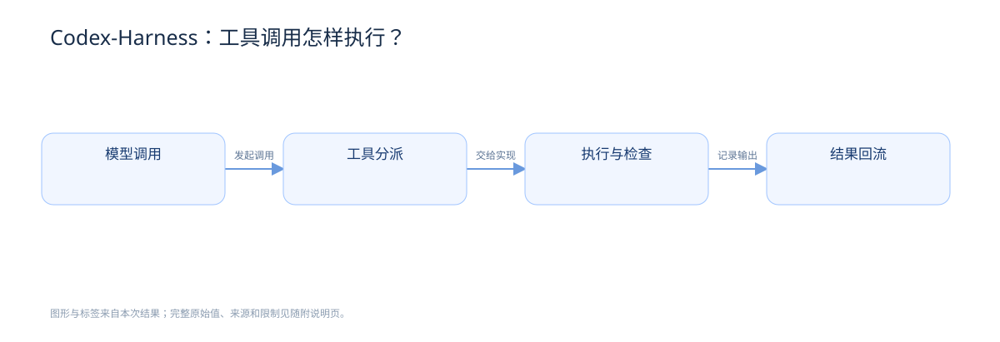

FROM A TOOL CALL TO AN ACTUAL RESULT.工具调用，
工具调用，
到底怎样执行？
用 Codex-Harness 的公开源码，
分清模型请求、执行检查和结果回流。
SOURCE SNAPSHOT / da2e174 / 2026-10-01
MODEL / TOOL CALL
tool: exec_command
call_id: <调用标识>
arguments: <工具参数>工具调用结构示意，非执行记录。工具分派执行与检查结果回流
提出调用，不等于执行成功。
沿源码找到真正的状态边界。ONE SOURCE CHAIN. FOUR EXPLANATIONS.
沿同一条链路，换个方式看懂。
源码案例：
模型调用 → 执行层 → 模型续接
01 / WRITING
阅读完整文字 ↗先分清，谁负责什么。
需要理解的关系
Codex-Harness 从模型响应中识别工具调用，将名称、调用标识和参数交给工具分派层，由对应实现处理执行；命令类路径包含权限与沙箱判断，正常返回的输出随后进入会话，供后续模型请求继续使用。
调用请求、执行过程和会话续接相互连接。把职责拆开
模型提出工具调用。
Harness 匹配工具实现。
工具输出供模型继续使用。
命令类执行要处理权限与沙箱。
模型消息与执行状态分开核验。
返回结果后，再判断任务是否完成。
短句 · 职责分明 · 保留源码依据查看写作检查 →
02 / DIAGRAM
打开完整 SVG ↗一次调用，输出流向哪里。

这是一轮调用的简化展开。输出回到会话之后，模型还可以继续提出下一次调用。

节点与箭头来自本次源码走读查看图解来源与限制 →
03 / INTERACTIVE
全屏探索 ↗点开一个环节，找到它的边界。
点击“执行与检查”，看它怎样承接调用；切换“核验依据”，打开对应固定提交的源码。
节点 · 搜索 · 状态对照 · 源码核验查看完整后续任务 →
04 / VIDEO
下载 MP4 ↗跟着调用，看清执行过程。
本例为了比较同时生成四种产物；它们使用同一份固定源码证据。
THE IMPORTANT DISTINCTION提出调用，允许执行，任务完成。
提出调用，允许执行，任务完成。
这是三个不同的判断。
模型发出调用，还要经过分派和实际执行。
工具返回了输出，也要对照任务目标核验。
假设示例
假设模型请求写入一个文件，
但执行层拒绝了操作。
一句“文件已修改”，
不能证明文件真的改变。
OPEN SOURCE. FIXED REVISION.
每个关键环节，都能回到源码。
基线为 OpenAI Codex 的公开提交 da2e174 ↗，日期为 2026-10-01。
本例是源码讲解，以命令类工具为重点，省略并行、取消、抢占和部分异常路径。它不是运行日志或完整架构审计；其他版本与工具实现需重新核验。